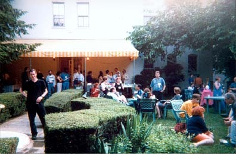
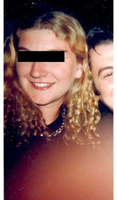
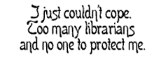

|
Part XI - Novice
Librarians
 As I tell this part of
the story, please believe me when I say my main concern at the
time was that no one get hurt-no strippers, no journalists, no
monopolists, no librarians, and especially not any journalists,
such as me or my ride home, Brian. If I failed at any point in
that mission, I hope you understand it was because of circumstance,
and not through any intent on my part. Please recall that I not
only had a prior injury in the form of a 3-inch blister on my
toeand we walked a dozen milesand I rescued Brian from
alien abductors (more on that later), but I was also suffering
from the effects, I now know, of a night of trying to survive
by sucking air through the crack in the trunk of Brian's Caprice
Classic. We need not include Satan in this discussion, but I
will probably introduce the topic anyway. As I tell this part of
the story, please believe me when I say my main concern at the
time was that no one get hurt-no strippers, no journalists, no
monopolists, no librarians, and especially not any journalists,
such as me or my ride home, Brian. If I failed at any point in
that mission, I hope you understand it was because of circumstance,
and not through any intent on my part. Please recall that I not
only had a prior injury in the form of a 3-inch blister on my
toeand we walked a dozen milesand I rescued Brian from
alien abductors (more on that later), but I was also suffering
from the effects, I now know, of a night of trying to survive
by sucking air through the crack in the trunk of Brian's Caprice
Classic. We need not include Satan in this discussion, but I
will probably introduce the topic anyway.
Writing now, I am further handicapped
by my current inability to find any of my copies of Strunk and
White. Please tell the committee that this is why my style has
no elements. If you feel my style has elements, then let "Them"
know my lack of guidance is why my elements have no style. If
the committee has disbanded, please hunt each and every one of
them down and give them what they deserve.
This said, let me tell you that I write
this portion of the documentation of our trip to D.C. only because
my companion claims to retain no recollection of the events herein...let
me repeat: this recounting was created not to redeem my name,
but to fill in a crucial period in the grand adventure that was
Pain & Revulsion in D.C.
 K, let's see...where did we leave off? I pulled
Brian out of the Capital Punishment Bar before the men in black
suits could probe us again. He didn't want to come; he was babbling
something about the "mission," but I was determined
not to be "questioned" again. K, let's see...where did we leave off? I pulled
Brian out of the Capital Punishment Bar before the men in black
suits could probe us again. He didn't want to come; he was babbling
something about the "mission," but I was determined
not to be "questioned" again.
I was almost sorry to leave the bar,
though I hadn't a penny to my namelet alone enough for another
fancy beer. It probably wasn't the ambience (rich warm wood and
brass balls broken by lush vegetation), or the restroom service
(sweet psychotherapy speak in whispers and kiss it dry beforeskin
I shake it), but the waitress. There was no time to consider
why she was twiddling my earlobe with her tongue, for I had a
daunting task to face: A tough dual mission to schmooze librarians
and find a place to stay.
Brian was babbling something about money...plenty
of money, lots of money, death, taxes, and national security.
I was feeling pretty patriotic, but not too secure: My ass still
hurt.
The pint of porter that had mysteriously
appeared on the table while Brian was in the bathroom had finally
quenched my thirst, thank goodness. The pint of non-drowsy/non-alcoholic
cough medicine, however, hadn't. Instead, it sat in my stomach
like a brick with a magnetic attraction towards the floor. Luckily,
I was kept upright by the strange buoyancy that had filled my
head. I bobbed like a drunken balloon as Brian led me into the
street.
We had hardly set foot on the pavement
when a woman grabbed Brian away from me. "Forks!" she
said. "Where do I get forks!"
"Uh, I dunno," he stammered.
I was slowly drifting away in the balmy evening breeze, thinking
'money, ass, money, ass.'
"Good luck though!" Brian
called after her.
Brian dodged over and caught me before
I drifted into traffic. "Who was that?" I asked,g struggling
to aim my face in his direction.
"That was Beth Schumaker, remember?"
said Brian. I was still lost. "From the meeting." I
indicated my lack of comprehension. "Remember your speech?"
Yes, I had given a speech, hadn't I...at
some sort of committee meeting. "Aha," I muttered.
It was coming clear: There had been a third, hidden mission.
I had been a part of it, but no one had been sure what part,
least of all myself. I had accomplished something, or perhaps
not. I'm not sure what. Yes, I had managed to give a speech.
It was all coming clear now, sort of...but there was no time
to think about that.
It was almost time for the Big Event:
The Independent Press Association (IPA) meeting had been largely
about impoverished radicals meeting each other before joining
together to schmooze with members gathered from the huge American
Librarian's Association (ALA) convention going on then. There
had also been something about grants, hefty grants, buckets of
money. Was that what the speech had been about? In any case,
we were there for the banquet the IPA was holding for the ALA.
There were a few other acronyms involved...Brian kept on trying
to explain something about something called the NSA? But the
main point of our journey was to impress librarians, and I was
determined we should do so.
 My
first impression as we entered was that we had walked in on the
wrong place. The fountain may have provided only a pathetic trickle
of water, but it set the scene: a garden of delights where the
most delicate of delicacies served themselves. Various erudite
folk wandered about munching little cakes and discussing the
Gutenberg Project's editions of Balzac. I was simply floored.
Two hot goth chicks immediately picked me up. "Are you librarians,"
I asked?
Brian was throwing little paper plates
like frisbees: "How am I supposed to eat? Do I look like
I ate today? How can I eat with these little saucers?"
"Why yes, we are librarians."
"Well excellent, I'm supposed to
schmooze librarians today," I said, laughing to cover up
my embarrassment as they exchanged looks. "And you two are
librarians, what a coincidence." Just then, Brian stepped
in to rescue me:
"Are you part of the mission? They
told me all about you. Where is our target?"
"Why yes, how did you know?"
said one of the chicks in black, the one with the heavy horn-rimmed
glasses. "We're from the mission." I didn't know what
he was talking about, but she seemed to...so I decided it was
time for a drink. I was finally rehydrated, but suddenly I wasn't
sure I could cope with people. I don't think it was the cough
medicine, exactly; it was all those librarians, and the pressure
to schmooze. I don't tend to go to art openings for a reason.
What can I say, I'm shy. So I went over to the bar and drank
five Dixie cups of wine in five gulps. For the rest of the banquet,
though, I was set. I had the box of wine I'd grabbed, so when
I got thirsty I could just tilt my head back and thumb the tap.
My first concern, I decided as I collected
my wits, was to keep track of Brian. After the experiences of
that day and the day before, I was worried about the safety of
anyone within a three mile radius of the fellow. I found him
in the middle of the patio of the Mott House, sprawled across
the birdbath fountain, a handful of pink petit-fours in one hand,
and a Dixie cup of champagne in the other. "Things are looking
up!" he cried with a grin as I yanked him to his feet. The
champagne sprinkled the cluster of librarians nearest us. "Is
this part of the plan?"
"Don't you see? There are strawberries in those little cakes!"
(Brian's nastiest allergy.) As I spoke, he appeared to go into
convulsions. I ran to catch him, but just then a man parted from
the champagne-spattered group beside us and dodged behind him.
Brian collapsed into his lap, and the two of them ended up on
the floor. I bent over sputtering apologies, but the man shoved
me aside, and urgently shouted into Brian's ear "What is
the message?"
I'm not sure Brian's reply was in English,
but he had a whole lot to say. Judging by the attentiveness of
the man taking notes, I guessed Brian must know what he was talking
about, so I snuck away.
After all, I had no idea at all what
I might be talking about. What was I doing there anyway? Where
was I, exactly? There was something about a road trip to the
Capitol...then there was a blank...then Brian going on about
a hole in time and 80's music...another blank. I remember cops
after us, some kind of big explosion, but not what happened after
that. Pills. Blank again. Then there was a speech I gave while
wearing no pants. That might have been a dream I had in the trunk
of his car. Every motion aggravated the mysterious pain in my
crotch...or not so mysterious: did I hook up last night? Most
of all, there was a lingering suffocation or heat. A memory of
swimming up through a dark ocean of sweat and finding only more
darkness, of a confined space and a desperate struggle to free
myself. I was contemplating darkness when something grabbed my
arm.
 "Are
you homosexual?" she said said with a thick foreign accent.
I was in no state to reply. I was gripped by the fear, and the
world had gone dark. "Are you to sleep with me?" She
repeated the same words, but they sounded different. What was
that accent , German? Belgian?
 "Ba...Ba...Baa..."
I must have replied.
"I'm sorry..." she was polite,
but insistent. "How far you see me?" She repeated in
that Austrian accent. That was the last straw.
"I'm blind! I can't see!"
I bawled, for all had gone dark.
"Take off your sunglasses,"
said Brian, pulling them off me. "For the picture."
I hadn't yet taken in my surroundings-the sun had gone down-before
a bright flash blinded me again. He grabbed me, righted me before
I fell to my knees and laughed "She thought you were security."
I collapsed again as he returned her camera.
The moment of blindness had thrown me
off. I just couldn't cope. Too many librarians, and no one to
protect me. I crept into a corner. Besides, Brian was doing fine.
There was one point where he was doing something to the steaming
intestines of an anarchist editor when I felt I should step in,
but something held me back. It seemed at the time that it was
just how things were meant to be. Never mind if someone unexpectedly
woke up with someone else's digestive tract stitched into them:
they were invited to the party...elective surgery was just part
of the fun. I could release myself of the duty of taking care
of Brian and apply myself to the task of finding us a place to
stay for the night.
Part XII:
Novice Librarians (perspective II)
Panic and Revulsion in Washington DC
-
Part XI - Novice Librarians by Jason Paul Fox.
|